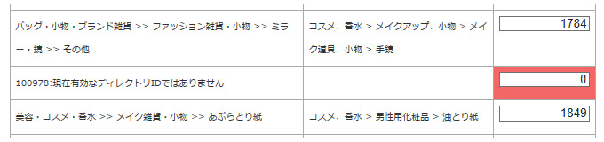

ディレクトリ紐付け設定機能のご紹介
この機能をご利用いただくと、楽天のCSVを取り込んで「データ変換」を行ったとき、ストアコンバーターが用意している紐付けに従って、楽天の「全商品ディレクトリID」から「ヤフーのプロダクトカテゴリパス」に自動変換されるようになります。（この機能を申し込んでいない場合は空欄で出力されます）
- ストアコンバーターの紐付けは下図のように画面で確認することができ、変更することもできます。
変更した内容は保存されますので、次回からは変更したオリジナルの紐付けが行われるようになります。
- 現在楽天で使用されていない「全商品ディレクトリID」があった場合は、下図のように赤く警告表示されるようになっています。
- 
楽天画像転送機能のご紹介
取り込んだ楽天のCSVの「商品画像URL」「PC用商品説明文」「PC用販売説明文」「スマートフォン用商品説明文」に記述されている画像について、楽天から画像を取得してヤフーへFTP転送するまでを自動で行う機能です。
相対パスにも対応しています。
- ヤフーは、商品画像ファイル名にルールがあったり、FTP転送するときに圧縮が必要で、ファイルサイズやファイル名にもルールがあり、画像の移行は非常に手間がかかるものですが、ストアコンバーターを使えば１クリックで実行されます。